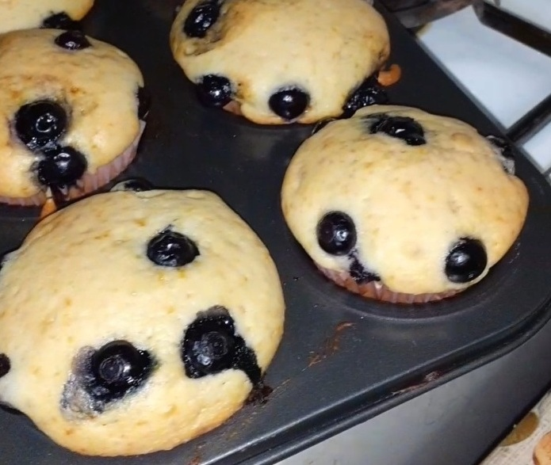
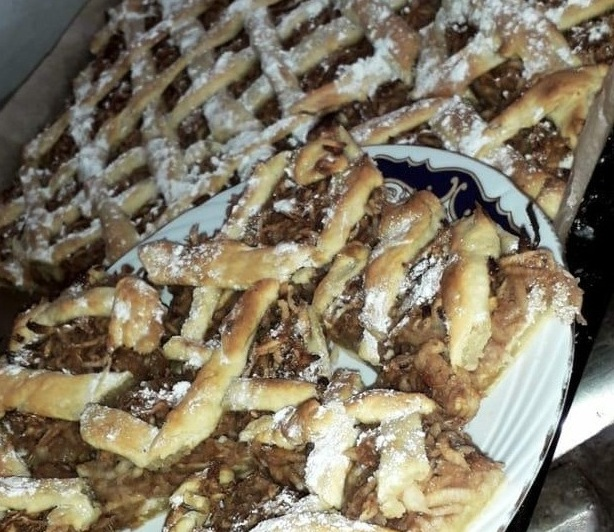
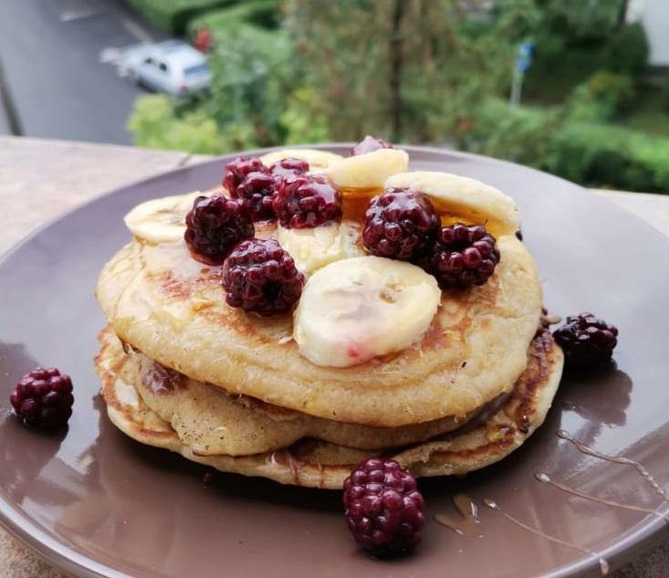

However, let's start with a little preview of who I am as a person. Like I said, I'am a 19 years old girl full of dreams and determination. I lived my all life in a small town called Jibou, from Sălaj, but recently I moved to Cluj-Napoca, where I want to build my life from now. I consider myself a temperate and patient person, but also a stubborn one. I think these "qualities" have made my life a little easier growing up, knowing what I want and working to get it. So, I know I'm just a teenager, but I know I can prove I'm ambitious and smart enough to become a Web Developer.
-
Playing guitar
One of my favorite activity that's relaxing me is playing guitar. I started learning at 14 years old, and 5 years later I still enjoy it. I'm playing at the church, sometimes alone, sometimes with a group of teenagers. In the future I would love to learn playing the violin as well, so that's a future plan I'm working on.
-
Reading books
Though I'm having trouble enjoying my hobbies nowadays, I still make time to read everyday. One of my favorite author is Karen Kingsbury, that has writen "Divine" and "Two weeks". Her books are filled with a great, miraculous and unshakable reality: God's grace is greater than our suffering. I have no words to characterize the way she writes. You'll find her books right here =>
-
Cooking
Like all people in the world, I have odd habits. When I'm upset and don't wanna talk to anybody I lock myself in the kitchen and cook something sweet, like cookies or cake. My favorite desert to cook is pancakes, and here are some pics of my preparates =>
  